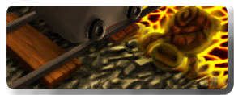

One Way Home reinvents the way of playing the traditional platform games. Addictive and original, changes the old perspective and controls to adapt them to the potential that iPhone and iPod touch offers. You will literally walk through different worlds using your fingers, stepping on your enemies, dragging objects, solving puzzles and riding and driving the vehicles and platforms that you'll find in your way.
Worldwide challenges
Improving your score in each level can be done by beating all the enemies, reducing the number of steps made, taking the highest number of rings and completing the level in the lower time possible. Your scores will be decorated with a medal. Beginners and unskilled players will obtain a bronze medal, easy-going players will get a silver medal, and if you want to get the gold medal you'll need a very skillful fingers. Keep in mind that the scores you get will be worldwide visible for every “One way home” player, so the challenge can easily change from just beating the game to become the number one in the world. Try, but it won´t be easy.
You really can't beat “One way home” just walking. You'll have at your own disposal some vehicles and platforms you can ride and drive. Wagons to go through the dangerous sands of badlands where the voracious man-eater worm lives and to avoid the lethal lava in the disastrous mine, boats you'll need to dodge the bite of LT. Bites, a crocodile that is dying to sink its teeth into you, and the Waterweedys, turtles willing to take you wherever you want risking its own life.
Worlds and stages
In “One way home” you'll be free to play a total of 36 stages plus a bonus stage, divided in four varied and colorful worlds, every each of them with its own peculiarities.
Hostile Beach
This is not an ordinary beach. Avoid traps, water mines and hedgehogs and step on every crab you see. You can rely on a bunch of turtles that will make your journey much more achievable.
Badlands
Be careful with the sand, because if you put a single finger on it that could be very bad. Within the sand lives Earthworm James, a gigantic man-eater worm that detects your position by the vibration of your steps. However there are many rocks to walk on and wagons you can ride to avoid being bitten. Careful too with Bombadillo, an armadillo that explodes when it touches you and Poisonette, a scorpion in a really bad mood.
Inhospitable Jungle
Looks like we found the ruins of an ancient civilization. Everybody is gone, except for the traps they left behind. An arrow can come through you if you're not careful with some tiles. The bridges in this zone can be pretty unstable, so I would walk fast. At least we got the Waterweedy turtles at our side again, and we can now use the boats that we'll find by the bank of the river. Pay always attention to LT. Bites, a crocodile that will be after us and would bite if we put a single finger on the water.
Disastrous Mine

Use wisely all you've learned until this point, because the mine won't give you a moment of peace. Looks like some Waterweedy turtles have mutated to become immune to the lava. Besides, we got the wagon again to confront the final challenges. Flaming Mole will cheat us, making us believe that he is harmless. There's a light at the end of the mine, but reaching it depends on you.